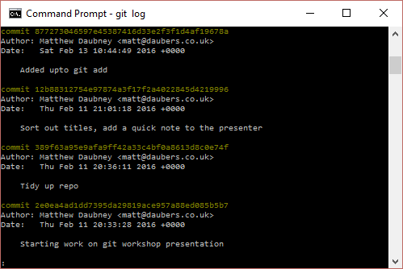
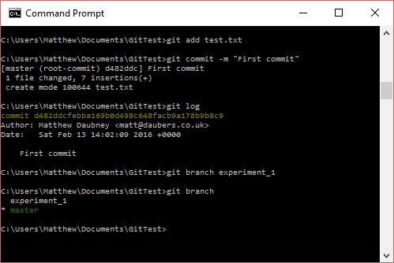
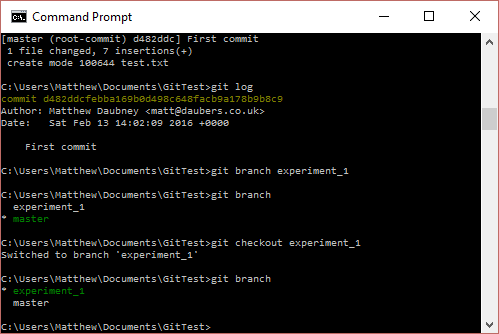

Discovering Git and Github
Or how I learned to stop worrying and love distributed version control
What is Git?
Git is a widely used source code management system for software development. It is a distributed revision control system with an emphasis on speed, data integrity, and support for distributed, non-linear workflows
- Distributed revision control system - Multiple copies in multiple places with varying revisions
- Data integrity - All revisions kept in a recoverable state
- Non-linear workflows - Merges can happen from any point in the commit tree
Git-ing Started With Git
Windows - http://www.git-scm.com/downloads
OSX - Use brew install git or http://www.git-scm.com/downloads
Linux - Use your package manager!
Extra Windows Notes
You may need to add the folder with the git exe's in it to your path.
- Right click My Computer (or the start button on Win 10)
- Click on "System"
- "Advanced System Settings"
- "Environment Variables"
And alter your PATH variable as required :)
Creating My First Repository
Exercise 1
Objectives
Learn how to initialise a repository, add files and commit them
- Create a folder somewhere on your filesystem
- Open a terminal or command prompt
- Move to that directory
- Check the directory is empty
- Run "git init"
What did git init do?
Let's add some code!
Keep your terminal open!
- Open a text editor (or an ide, or openscad, or whatever)
- Write some code in your favourite language
- Save the file into your repositories directory
- In your terminal cd back into the root directory
- Run "git add <filename>"
We've just told git to add the current version of that file to the current working revision of the repository.
This isn't a point we roll back or forward to yet, it's not been committed to the repository. This means that git will only look after the files you "add", all others will be ignored.
It's time to commit
Run "git commit"
Your default text editor (or vi in Windows for some reason) should pop up with a list of changes write a message describing what you've done then save and exit. In vi, hit "i" before typing and then "esc", ":wq" to save and exit.
You can see your history in git by typing git log
Branches

Branches in git and how you manage them start to slip into the realms of workflows, we'll cover the basics, but won't go too far down the workflow rabbit hole.
Imagine you had a program and wanted to implement a new feature. You might not want to alter your "master" code as it's being used in production. So we can create a branch, make modifications there and then merge it back in.
My First Branch
Go back to your command prompt and type "git branch experiment_1"
Then type "git branch"

We've created the branch but we're not working in it, so lets check it out
Type "git checkout experiment_1"
Then type "git branch" again
An exercise for you
- Edit your code in the new branch
- Add and commit the changes